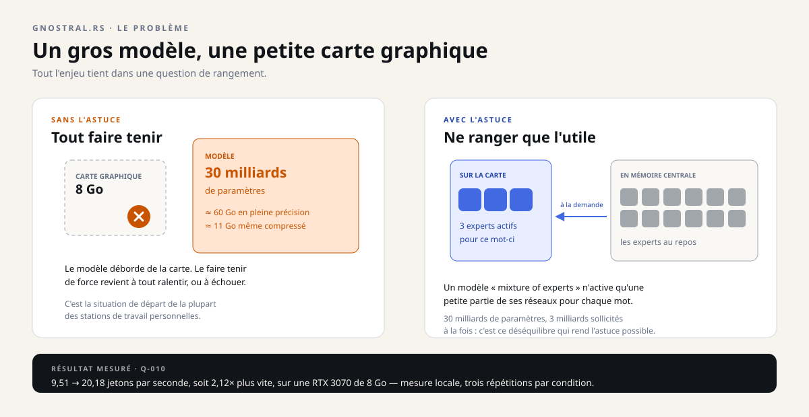
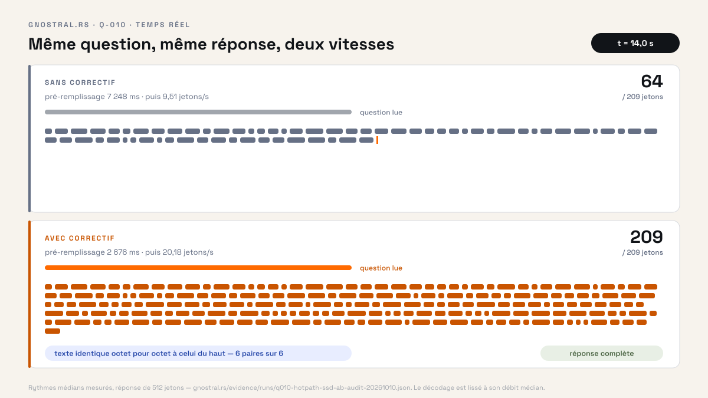
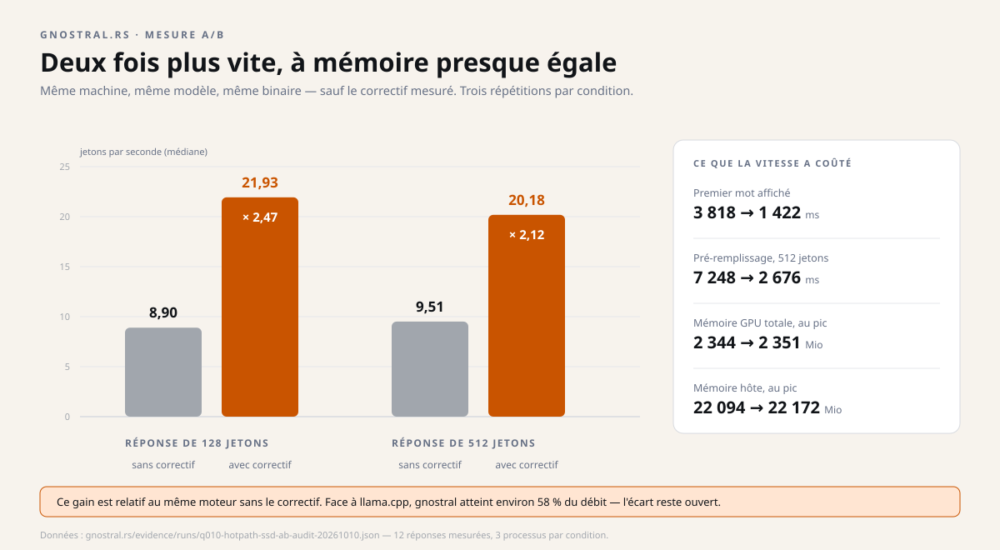
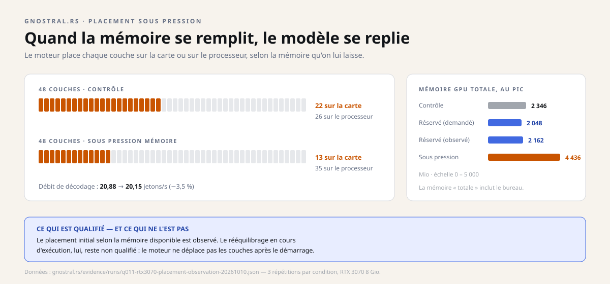

Instantané du 29 octobre 2026. Ce dossier décrit les quatre dépôts tels qu'ils étaient ce jour-là ; les projets ont continué d'avancer depuis, et les dépôts font foi. Les liens soulignés mènent aux sources, figées à leur état de ce jour.
Dossier 2 · le moteur
gnostral.rs
Un laboratoire ouvert qui cherche à faire tourner de gros modèles d'intelligence artificielle sur une carte graphique modeste — et qui publie ses mesures, y compris celles qui déçoivent.
Recherche v0.8.0 Licence MIT
En une image
Imaginez un entrepôt et un petit comptoir. Le comptoir, c'est la carte graphique : étroit, mais très rapide. L'entrepôt, c'est la mémoire centrale : immense, mais lent à desservir.
Un modèle de 30 milliards de paramètres ne tient pas sur le comptoir. L'astuce consiste à n'y poser que les trois milliards de morceaux utiles à l'instant présent, et à aller chercher les autres à l'entrepôt seulement quand ils servent. C'est tout l'enjeu de gnostral.rs.
Le problème, puis l'astuce

La machine de référence n'est pas un serveur de datacenter : une RTX 3070 de 8 Go de mémoire graphique, 32 Go de mémoire centrale. C'est une configuration de station de travail personnelle — et c'est précisément ce qui rend la recherche intéressante.
Le résultat principal : en gardant sur la carte les parties toujours sollicitées et en empruntant les experts quantifiés depuis la mémoire centrale, le débit passe de 9,51 à 20,18 jetons par seconde, soit 2,12 fois plus vite. Mesuré localement, trois répétitions par condition, réponses identiques octet pour octet.

Ce qui a été mesuré — et dans quel cadre
| Jalon | Résultat | Ce que cela ne dit pas |
|---|---|---|
| Experts empruntés Q-010 |
9,51 → 20,18 jetons/s sur une réponse de 512 jetons, médiane de trois répétitions, 2,12× | Pas plus rapide que llama.cpp (34,54 jetons/s sur la même machine) ; pas valable pour toutes les architectures. |
| Placement au chargement Q-011 |
22/21/21 couches sur la carte → 13/12/13 sous réservation de mémoire | Placement initial seulement ; aucune migration pendant le service. |
| Un moteur, trois familles Q-012 |
3/3 : modèle dense, embeddings, MoE quantifié | Trois serveurs successifs ; pas de co-résidence, pas de stabilité de production. |
| Vrai processus dense Q-013-C |
Réponse sémantique exacte « GNOSTRAL » ; +8 Mio de mémoire GPU après arrêt | Un seul modèle, un serveur de courte durée, pas une API publique. |


Chaque chiffre a son rapport, son protocole et ses limites. Le dépôt refuse explicitement de publier un chiffre sans la preuve qui va avec — y compris quand la preuve contredit une affirmation plus flatteuse.
Par rapport à quoi, exactement ?
Un « 2,12× plus vite » ne veut rien dire sans son point de comparaison. Ici, la référence n'est pas un autre logiciel : c'est le même moteur, une version plus tôt.
Concrètement, « Strata » est la révision de mistral.rs utilisée au laboratoire : la version publique 0.9.3, plus une intégration de résidence d'experts. Les 9,51 jetons/s mesurent ce moteur avant le patch ; les 20,18 mesurent le même binaire, recompilé avec une seule fonction changée — les poids d'experts quantifiés sont empruntés au lieu d'être recopiés à chaque appel.
Face à llama.cpp, en revanche, la comparaison existe et elle est défavorable : 34,54 jetons/s pour llama.cpp contre 20,18 pour gnostral, sur le même modèle et la même carte. Le rapport du dépôt l'écrit explicitement : ces gains n'établissent pas une supériorité sur les options CPU-MoE de llama.cpp.
Quant à mistral.rs, ce n'est pas un adversaire : c'est le moteur dans lequel le patch est appliqué. gnostral n'est pas un moteur concurrent — c'est un ensemble de patches, de contrats typés et d'outils de mesure autour de mistral.rs. Se comparer à lui reviendrait à comparer une voiture à son propre moteur.
mistral.rs est un moteur d'inférence écrit en Rust. Mistral AI est une entreprise qui produit des modèles. Les deux n'ont rien à voir, et les modèles mesurés ici sont des Qwen, pas des modèles Mistral.
Dire « plus rapide que Mistral » n'a donc pas de sens tant qu'on ne précise pas duquel on parle — et, s'il s'agit du moteur, quelle version sert de référence.
La formulation exacte est : « 2,12× plus vite que la même révision de mistral.rs sans le patch, et encore 58 % du débit de llama.cpp sur ce modèle ». C'est moins spectaculaire, mais c'est vrai, daté et vérifiable.
Comment une mesure devient une preuve
La contribution la plus solide du projet n'est peut-être pas le gain de vitesse, mais la méthode. Six étapes, toujours les mêmes, et aucune ne peut être sautée.
Concrètement : on identifie le code et le modèle par une empreinte (SHA), on écrit un plan qui décrit exactement ce qui sera exécuté, on lance un seul processus dans un cadre limité, on vérifie une réponse précise, on arrête, on vérifie que la mémoire est revenue, puis un programme indépendant refait les contrôles.
L'ordre compte. Un serveur peut répondre à une requête de contrôle alors que les poids ne sont pas encore chargés. gnostral.rs distingue donc huit états, du simple fait « déclaré dans la documentation » jusqu'à « qualifié par un audit indépendant ».
Les huit états de la vérité, en clair
- Déclaré — la source ou le fournisseur dit que l'opération existe.
- Prévu — une demande correspond à une capacité et à une preuve précises ; aucun droit d'exécution n'est donné.
- Prêt en HTTP — le point de contrôle répond. Ce n'est pas encore de l'inférence.
- Prêt sémantiquement — un test indépendant réussit sur le moteur et le modèle exacts.
- En service — seule l'opération admise et bornée se poursuit.
- Arrêt / déchargement — les processus et requêtes sont annulés ou terminés, le déchargement est acquitté.
- Mémoire rendue — des observations système montrent le retour à l'enveloppe annoncée.
- Qualifié — un auditeur indépendant vérifie les identités, les contrôles négatifs et les non-revendications.
Ce que ce n'est pas
- Pas un serveur prêt à déployer. Ce n'est pas un remplacement autonome de mistral.rs, llama.cpp, Candle ou vLLM.
- Pas de changement de modèle à chaud. La séquence A → B → A sous un même superviseur n'a pas été démontrée.
- Pas d'API publique sécurisée. Le pilote parle à localhost sur un port fixe, sans authentification d'un pair hostile.
- Pas de service multi-utilisateur. Aucun plan de contrôle ni engagement de disponibilité n'est ratifié.
- Pas de garantie sur votre matériel. Les chiffres viennent d'une configuration précise et sont explicitement non portables.
Pourquoi les échecs sont publics
Le premier essai de Q-010 a échoué : la mémoire graphique n'était pas revenue dans la marge attendue (+196 Mio contre une tolérance de ±128 Mio). Le premier essai de Q-012 a échoué aussi : une fonctionnalité de compilation manquait, et le modèle MoE a dépassé le délai.
Les deux échecs sont toujours dans le dossier. C'est un choix méthodologique, pas une coquetterie : un résultat dont on ne connaît pas les ratés n'est pas réutilisable. Et un chiffre qui ne peut pas être contredit n'est pas une mesure, c'est une affirmation.
Le même principe s'applique au benchmark Bonsai : la référence retenue est 35,2 jetons par seconde, pas la revendication plus flatteuse de 40 — faute de preuve suffisante.
Ce que ça change, selon qui vous êtes
Curieux de l'IA locale
Vous comprenez pourquoi un modèle ne « rentre » pas, et ce que coûte chaque choix de placement. Les analogies du dossier suffisent ; le dépôt fournit les détails.
Développeur
Le dépôt contient un contrat de moteur typé, un harnais de processus borné, des plans liés à une empreinte et des reçus de mesure en JSON. Beaucoup sont testables sans GPU.
Décideur ou financeur
L'actif n'est pas un produit fini : c'est une discipline de preuve, appliquée à un problème que la plupart des équipes préfèrent contourner en achetant du matériel.
Pour aller plus loin
Technique — les mots du dépôt
MoE (« mixture of experts ») : une architecture où chaque jeton n'active qu'un sous-ensemble des réseaux. Quantisation Q2_K / Q3_K : une compression des poids sur 2 à 3 bits, qui réduit fortement la mémoire au prix d'un peu de qualité. Jeton : un fragment de mot ; les débits se mesurent en jetons par seconde. Résidence : l'endroit où un morceau de modèle est réellement chargé.
Langage : Rust pour les contrats, les noyaux et le harnais ; Python pour le pilote d'expérience et l'auditeur. Licence : MIT pour le matériel d'origine ; les projets amont gardent leurs licences et leur attribution.
Vérifier sans carte graphique
Le dépôt prévoit une évaluation en trente secondes : tests du contrat de moteur, tests de la résidence d'experts, tests unitaires Python, puis deux scripts de contrôle d'hygiène publique et d'identité de version. Aucun de ces contrôles ne demande de GPU.
Une expérience réelle, elle, exige des poids et un exécutable exacts, plus une station de travail isolée et qualifiée. Le contrat de reproduction le dit explicitement.